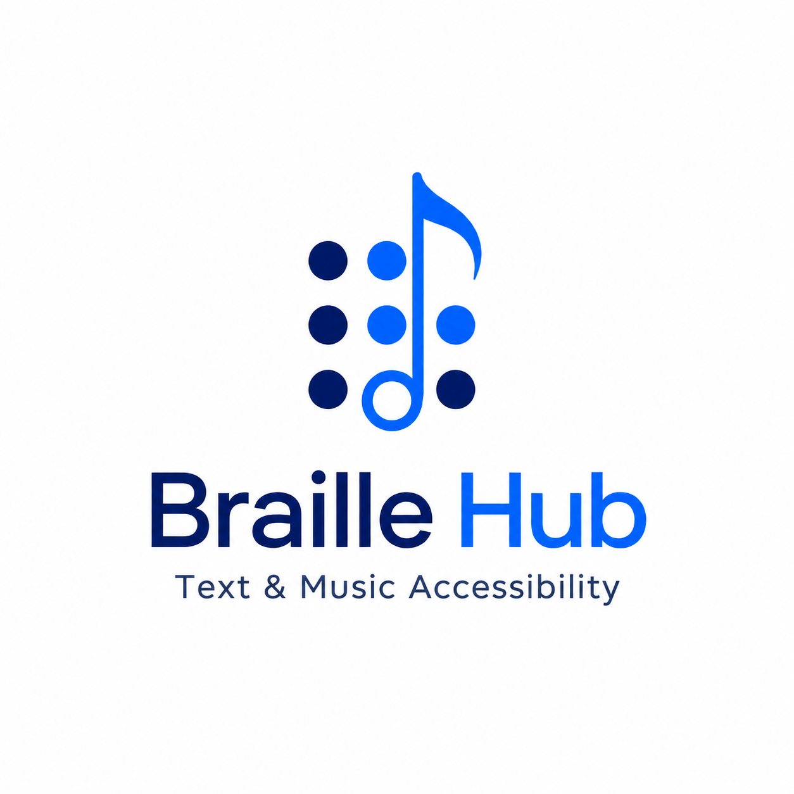

Microsoft 365 Add-in
Braille Hub
Translate the current supported Office selection with the shared Persian Braille SDK.
Waiting for Microsoft Office
Braille Music from MIDI
Choose a Standard MIDI file, then choose exactly one MIDI line. The file is read locally in this task pane and translated through the shared Braille Hub translation platform.
No MIDI file selected.
Phase 14 converts one source line at a time. A line is one MIDI track/channel pair. No notes inside the selected line are removed automatically.
Unicode Music Braille
BRF / Braille ASCII
Diagnostics
Music Braille action unavailable
Phase 14.9 inserts the exact successful preview into the current Word selection or caret. Windows live validation is performed separately.
Braille preview
- Selected text
- Unicode Braille
- Cells
- Normalized text
- Structural tokens
Translation unavailable